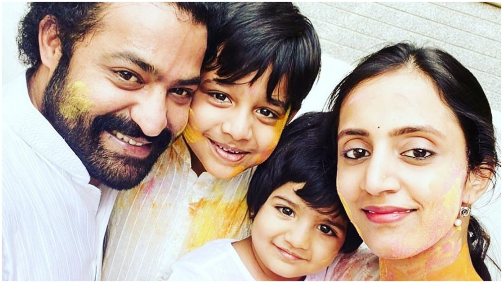
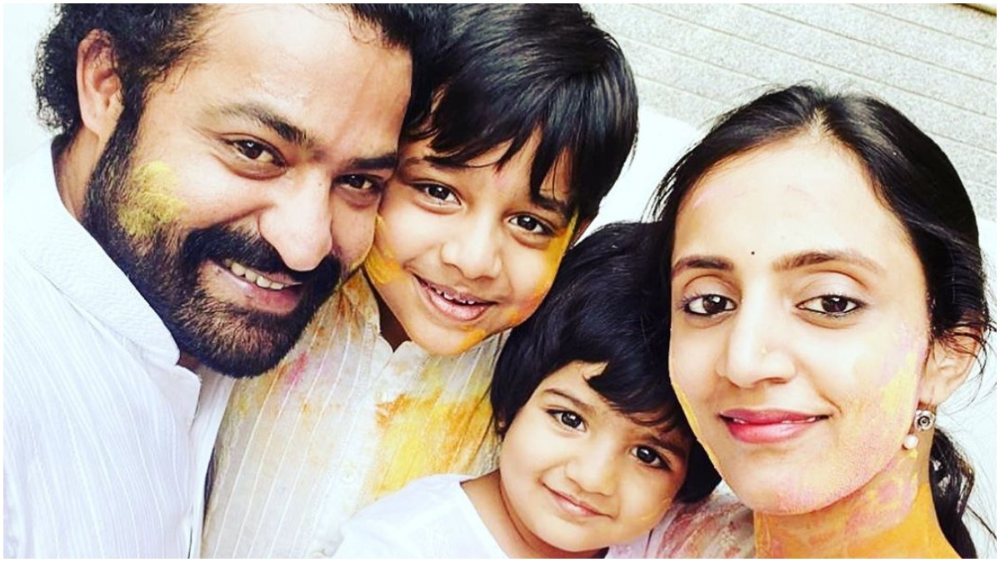

Nandamuri Taraka Rama Rao Jr. (born 20 May 1983), also known as Jr NTR or Tarak, is an Indian actor, dancer, and television presenter who primarily works in Telugu cinema. One of the highest paid Telugu film actors, Rama Rao Jr. has won several accolades, including two Filmfare Awards, two state Nandi Awards, and four CineMAA Awards. Since 2012, he has featured in Forbes India Celebrity 100 list. Grandson of former chief minister of Andhra Pradesh N. T. Rama Rao, he started his career as a child actor in Brahmarshi Viswamitra. Rama Rao Jr. also starred as a child actor in the lead role as Rama in Ramayanam (1997), which won the National Film Award for Best Children's Film that year. He made his debut as a lead actor with the commercial failure Ninnu Choodalani (2001). He rose to prominence with the coming-of-age film Student No. 1 (2001) and the action drama Aadi (2002). Rama Rao Jr. established himself as a renowned actor of Telugu cinema with works such as Simhadri (2003), Rakhi (2006), Yamadonga (2007), Adhurs (2010), Brindavanam (2010), Baadshah (2013), Temper (2015), Nannaku Prematho (2016), Janatha Garage (2016), Jai Lava Kusa (2017), Aravinda Sametha Veera Raghava (2018), and RRR (2022), the latter being his highest-grossing release. He won two Filmfare Awards for Best Actor – Telugu for his performances in Yamadonga and Nannaku Prematho. Rama Rao Jr. is also notable in the television industry. In 2017, he hosted the first season of the Telugu reality TV show Bigg Boss on Star Maa. Rama Rao Jr. started hosting the fifth season of Evaru Meelo Koteeswarulu in 2021 on Gemini TV.
Rama Rao was born on 20 May 1983 as son to film actor and politician, Nandamuri Harikrishna and Shalini Bhaskar Rao. His father is of Telugu descent and his mother is a Kannada Brahmin who hails from Kundapur, Karnataka. He is the grandson of Telugu actor and former Chief Minister of Andhra Pradesh, N. T. Rama Rao. Initially named Tarak, he was renamed as N. T. Rama Rao on the suggestion of his grandfather.[8] Rama Rao did his schooling at Vidyaranya High School, Hyderabad, and completed his Intermediate education at St. Mary's College, Hyderabad. He is a trained Kuchipudi dancer. He is the half-brother of actor and producer Nandamuri Kalyan Ram, the nephew of actor and politician Nandamuri Balakrishna and former Chief Minister of Andhra Pradesh, N. Chandrababu Naidu, and the cousin of actors Taraka Ratna, Nara Rohit and politician Nara Lokesh.
Rama Rao hosted the reality show, Bigg Boss 1 that was broadcast on the Star Maa. Rama Rao's television debut was a huge success and had a record breaking ratings for Star Maa, making it the number one channel among all the shows. The show began airing from 16 July 2017. He has also been as a guest in Telugu reality game show Meelo Evaru Koteeswarudu and Telugu reality dance shows Dhee 2 and Dhee 10.In February 2021, he was confirmed to be the host of Evaru Meelo Koteeswarulu. Later, on 10 July 2021, he joined the production of the show.
N. T. Rama Rao Jr., also called Jr. NTR and Tarak, is an Indian actor, dancer, and television presenter who works in Telugu films. Rama Rao first appeared as a child artiste in the film Brahmarshi Viswamitra, written, directed and starred by his grandfather N. T. Rama Rao in 1991. He went on to play the titular role as Rama in the 1997 mythological film Ramayanam. Rama Rao made his debut as a lead actor in 2001 with the film Ninnu Choodalani, which was a box office failure. He tasted his first success in the same year with the S. S. Rajamouli's directorial debut, coming-of-age action film Student No.1.
Though Subbu which released in the same year could not impress the audience, his 2002 action film Aadi was a massive success. For the film, Rama Rao received Nandi Special Jury Award presented by the Government of Andhra Pradesh. The two next films Allari Ramudu and Naaga were back-to-back failures. His second collaboration with the director S. S. Rajamouli was the 2003 action film Simhadri, which ended up as one of the biggest blockbusters of that year. In the film, Rama Rao is seen as a kind-hearted man, Simhadri who has a violent past. In 2005, Rama Rao played a dual role for the first time film Andhrawala directed by Puri Jagannadh. The film could not reach the high expectations and bombed at the box office. Samba which released in the same year had a decent response but his subsequent films Naa Alludu, Narasimhudu and Ashok were a string of failures.
In 2006, Rama Rao starred in the film Rakhi, which is considered one of his finest performances.[citation needed][by whom?] Though the film was an average grosser, his performance in the role of innocent man-turned vigilante and climax sequence were praised particularly. In 2007, Rama Rao made his third collaboration with the director S. S. Rajamouli for the socio-fantasy film, Yamadonga. For this film, the actor made a complete body transformation and shed extra kilos. The film was praised for its unique story and performances and became one of the biggest hits of that year. Rama Rao has won his first Filmfare Award as Best Actor – Telugu for the film.
In 2010, Rama Rao featured in two films, Adhurs and Brindavanam, both of the were successful ventures. Over the next few years, Rama Rao starred in several films, notably Oosaravelli and Baadshah. His consequent films, Ramayya Vasthavayya and Rabhasa were box office failures which received lukewarm response both audience and his fans alike, for which Rama Rao was deeply disappointed and promised his fans to work harder. In 2015, Rama Rao made his second collaboration with the director Puri Jagannadh in the action film Temper which gave the actor a much needed comeback. In the film, he played a corrupt police officer, whose life changes after stumbling upon a rape case. In his landmark 25th film, Rama Rao featured in the 2016 thriller - drama, Nannaku Prematho written and directed by Sukumar. The film explored emotional relationship between a father and his son spanning the last 30 days of the father's life. Despite being an average grosser domestically, the film performed exceedingly well in the overseas. In the same year, his film Janatha Garage, directed by Koratala Siva and co-starred by Malayalam actor Mohanlal, became the highest-grossing Tollywood film of that year collecting nearly ₹140 crore. In 2017, Rama Rao played triple role for the first time in the action film Jai Lava Kusa which also grossed more than ₹100 crores. In the same year, he featured as the host for the first season of the television series Bigg Boss .
In 2018, the actor teamed up with the director Trivikram for the action drama film, Aravinda Sametha Veera Raghava. In the film, Rama Rao played a young man who decides to put an end to the bloodshed between two warring villages. The film grossed more than ₹165 crore and became his highest grossing film surpassing Janatha Garage. In 2021, Rama Rao returned to television as a host for the game show Evaru Meelo Koteeswarulu, the Telugu version of Who Wants to Be a Millionaire?. In his fourth collaboration with the director S. S. Rajamouli, Rama Rao played the role of the Indian revolutionary, Komaram Bheem in the period action film RRR. The film became a global phenomenon, receiving appreciation from India and overseas. The performance of Rama Rao as Komaram Bheem has been lauded by the audience and critics alike, as he became the only Asian actor to appear on the probable contendors list for the Best Actor category in the 95th Academy Awards.
| Year | Title | Role |
|---|---|---|
| 1991 | Brahmarshi Viswamitra | Bharata |
| 1997 | Ramayanam | Rama |
| 2001 | Ninnu Chudalani | venu |
| 2001 | Student No.1 | Aditya |
| 2001 | Subbu | Bala Subramanyam |
| 2002 | Aadi | Aadi Keshava Reddy |
| 2002 | Allari Ramudu | Ramakrishna |
| 2003 | Naaga | Nagaraju |
| 2003 | Simhadri | Simhadri |
| 2004 | Andhrawala | Munna/Shankar Pehalwan |
| 2004 | Samba | Samba siva naidu |
| 2005 | Naa Alludu | Karthik/Murgan |
| 2005 | Narasimhudu | Narasimhudu |
| 2006 | Ashok | Ashok |
| 2006 | Rakhi | Ramakrishna |
| 2007 | Yamadonga | Raja |
| 2008 | Kantri | Kantri/Kranthi |
| 2010 | Adhurs | Narasimha Chari/ Narasimha |
| 2010 | Brindavanam | Krishna |
| 2011 | Sakthi | Sakthi Swaroop/ Maha Rudra |
| 2011 | Oosaravelli | Tony |
| 2012 | Dammu | Ramachandra/ Raja Vijay Dhwaja Sri Simha |
| 2013 | Baadshah | Baadshah/ N.T.Ramarao |
| 2013 | Ramayya Vasthavayya | Nandu / Ramu |
| 2014 | Rabhasa | Karthik |
| 2015 | Temper | Daya |
| 2016 | Nannaku Prematho | Abhiram |
| 2016 | Janatha Garage | Anand |
| 2017 | Jai Lava Kusa | Jai "Raavan" Kumar / Lava Kumar / Kusa Kumar |
| 2018 | Aravinda Sametha Veera Raghava | Veera Raghava Reddy |
| 2022 | RRR | Komuram Bheem |